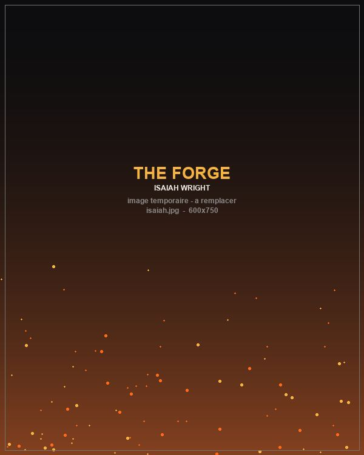

Isaiah Wright
Aspen Kennedy · Le héros
Sorti du lycée sans projet, il vit chez sa mère et évite soigneusement toute responsabilité. Fier, doué au basket, il est surtout terrifié à l'idée d'échouer.
« Je ne savais même pas qu'on pouvait décider de qui on allait devenir. »